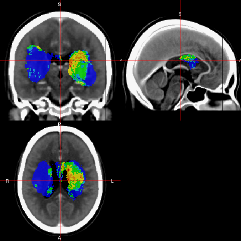
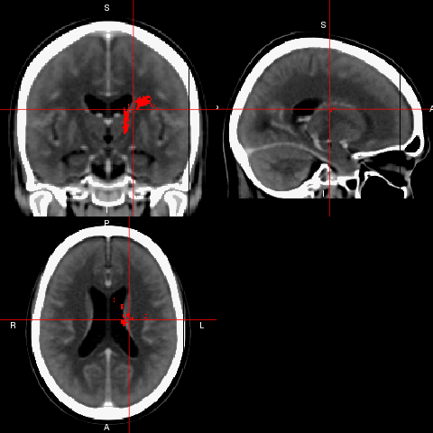
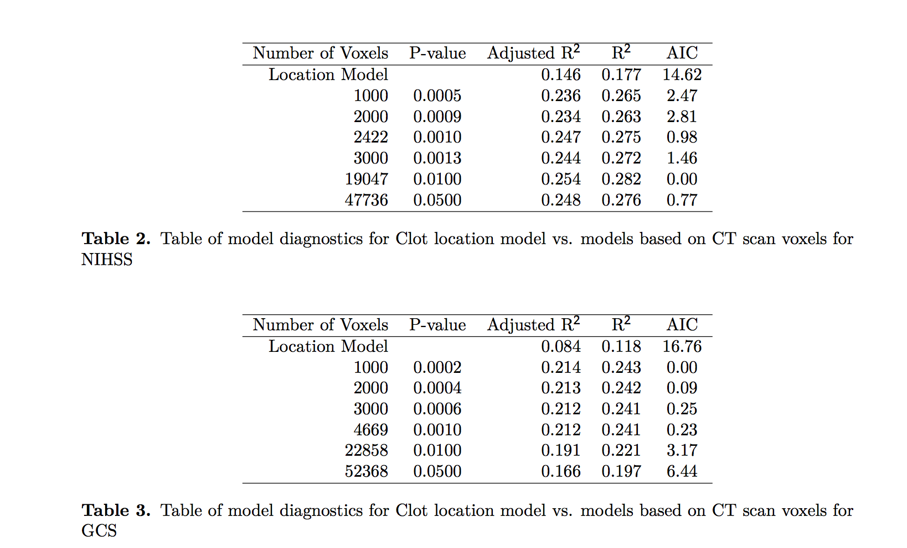

- Register patient CT scans to a CT template
- Create a 3-dimensional (3D) density map
- Provide a breakdown of hemorrhage engagement of individual regions
- Test if differences in location relating to a NIHSS/GCS
- Generate a stroke ROI that is likely to be associated with NIHSS/GCS and test its predictive performance using within-sample validation
CT Registration and Population Locations of Strokes
John Muschelli
Goals
Registration of CT Scans

3-dimensional (3D) density map
Brighter means higher percentage

Breakdown of hemorrhage engagement
How to best display a table of results?
We used 3 different templates: MNI, EVE-1, EVE-2
Difference between them?
- MNI does not do any white matter segmentation
- EVE-1 delineates WM into separate regions
- EVE-2 lumps WM more in with GM
Breakdown of hemorrhage engagement: MNI
MNI: Top Location: Putamen
| Area | MNI |
|---|---|
| Putamen | 44.30 |
| Insula | 25.30 |
| Uncategorized | 18.50 |
| Temporal Lobe | 7.70 |
| Thalamus | 2.30 |
| Frontal Lobe | 1.80 |
| Caudate | 0.10 |
Breakdown of hemorrhage engagement: EVE_1
EVE_1: Top Location: PUTAMEN_left
| Area | EVE_1 |
|---|---|
| PUTAMEN_left | 22.50 |
| External_capsule_left | 14.90 |
| Posterior_limb_of_internal_capsule_left | 8.90 |
| INSULAR | 8.80 |
| Background | 7.70 |
| GLOBUS_PALLIDUS_left | 5.10 |
| PRECENTRAL_WM_left | 5.00 |
| Inferior_fronto-occipital_fasciculus_left | 4.10 |
| Superior_corona_radiata_left | 4.10 |
| Retrolenticular_part_of_internal_capsule_left | 4.00 |
| Fornix(cres)_Stria_terminalis_left | 2.60 |
| PRECENTRAL_GYRUS_left | 2.50 |
| SUPERIOR_TEMPORAL_GYRUS | 2.20 |
| INFERIOR_FRONTAL_WM_left | 2.10 |
| Anterior_limb_of_internal_capsule_left | 1.30 |
| Sagittal_stratum_left | 1.10 |
| Uncinate_fasciculus_left | 0.70 |
| INFERIOR_TEMPORAL_WM_left | 0.40 |
| POSTCENTRAL_GYRUS_left | 0.40 |
| Cerebral_peduncle_left | 0.30 |
| INFERIOR_FRONTAL_GYRUS_left | 0.30 |
| INFERIOR_TEMPORAL_GYRUS | 0.30 |
| POSTCENTRAL_WM_left | 0.30 |
| SUPERIOR_TEMPORAL_WM_left | 0.30 |
Test if differences in location
For NIHSS:

Test if differences in location
For GCS:

ROI
ROI for GCS, top 2000 p-values:

ROI
ROI for GCS, top 22858 p-values:

ROI Prediction

Validation
111 patients to 3 readers
22 patients randomly selected twice (each reader got the same duplicates)
Send the images (NIfTI) and the images that were registered to template
CT Scoring (Natalie)